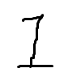

sphinx-test1 
0.1
全体目次
Sphinxとrestの練習
1. restructured text の練習
2. 引用書籍一覧(ページinclude)
3. ロールやディレクティブの練習
4. HTMLのカスタマイズ
5. 引用書籍一覧(ページ分割)
6. 索引(index)の例
全体目次2
1. restructured text の練習
2. 引用書籍一覧(ページinclude)
3. ロールやディレクティブの練習
sphinx-test1
Docs
»
5. 引用書籍一覧(ページ分割)
View page source
5. 引用書籍一覧(ページ分割)
¶
[CIT04]
Book4 Title. foo bar
[CIT05]
Book5 Title. foo bar
[CIT06]
Book6 Title. foo bar
my theme, hello, WORLD - good evening